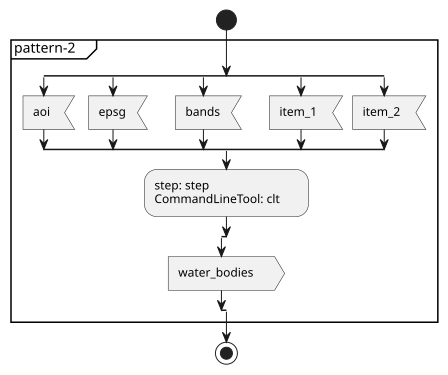
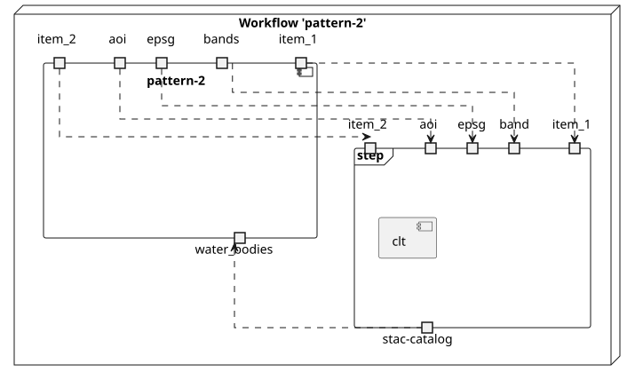
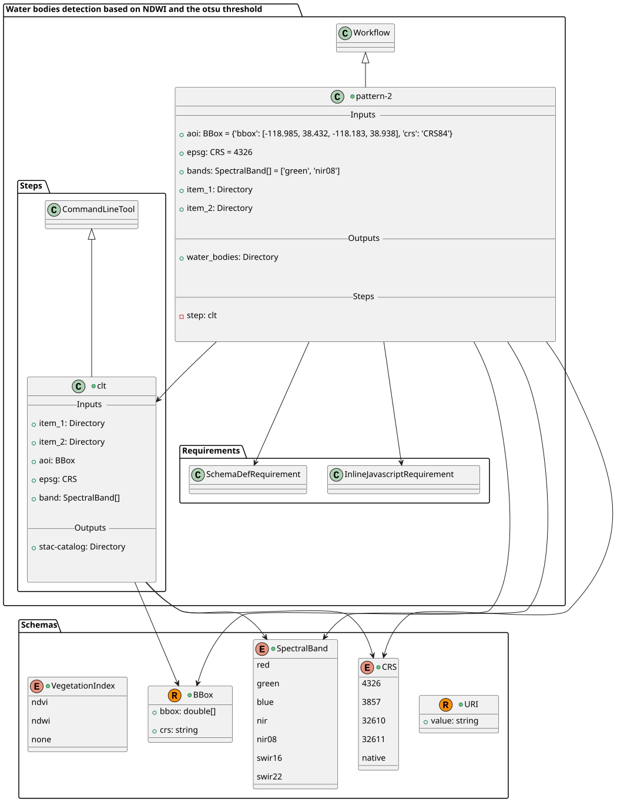
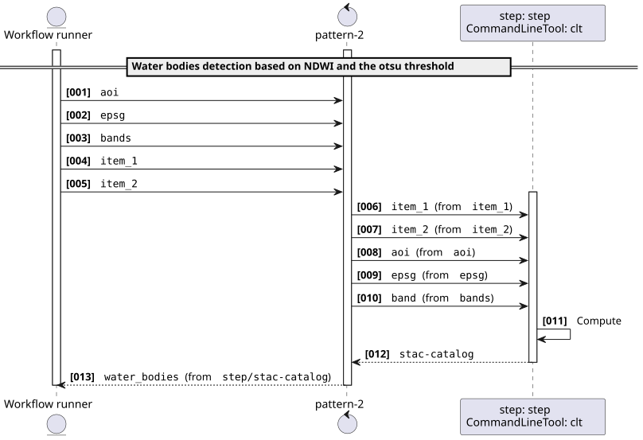
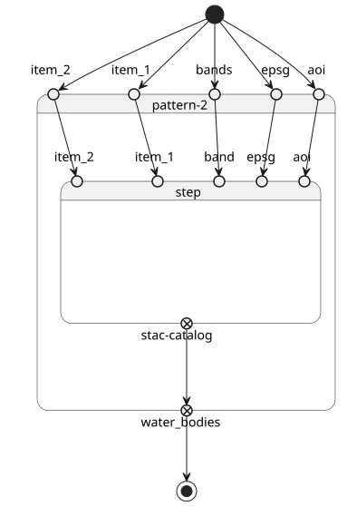
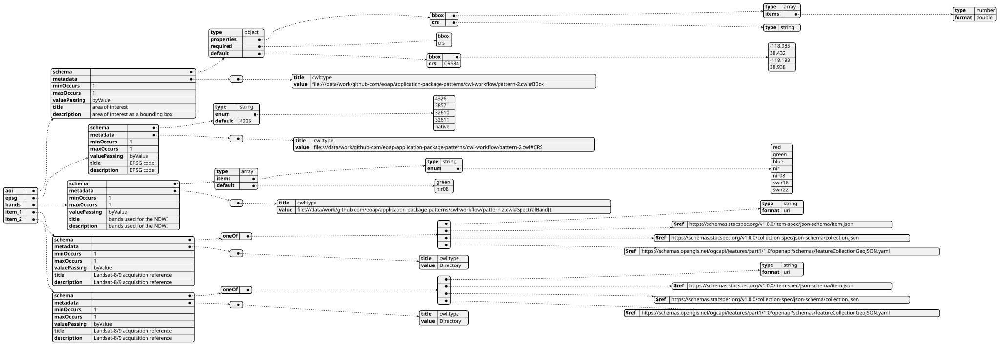
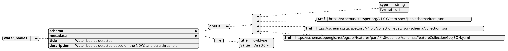

pattern-2
Repository: https://github.com/eoap/application-package-patterns
Version: 2.0.0
License: {'@type': 's:CreativeWork', 's:identifier': 'Apache-2.0', 's:name': 'Apache License 2.0', 's:url': 'https://spdx.org/licenses/Apache-2.0.html'}
Author: Lois Lane (lois.lane@meoga.com)
Author: Clark Kent (clark.kent@meoga.com)
Water bodies detection based on NDWI and the otsu threshold
Water bodies detection based on NDWI and otsu threshold applied to a pair of Landsat-8/9 acquisitions
Inputs
| Name | Type | Description |
|---|---|---|
| aoi | #BBox |
area of interest as a bounding box |
| epsg | #CRS |
EPSG code |
| bands | #SpectralBand[] |
bands used for the NDWI |
| item_1 | Directory |
Landsat-8/9 acquisition reference |
| item_2 | Directory |
Landsat-8/9 acquisition reference |
Outputs
| Name | Type | Description |
|---|---|---|
| water_bodies | Directory |
Water bodies detected based on the NDWI and otsu threshold |
Type https://raw.githubusercontent.com/eoap/schemas/main/string_format.yaml#URI
name: https://raw.githubusercontent.com/eoap/schemas/main/string_format.yaml#URI
type: record
fields:
- name: value
type: string
Type #BBox
name: '#BBox'
type: record
fields:
- name: bbox
type:
type: array
items: double
- name: crs
type: string
Type #SpectralBand
name: '#SpectralBand'
type: enum
symbols:
- red
- green
- blue
- nir
- nir08
- swir16
- swir22
Type #CRS
name: '#CRS'
type: enum
symbols:
- '4326'
- '3857'
- '32610'
- '32611'
- native
Type #VegetationIndex
name: '#VegetationIndex'
type: enum
symbols:
- ndvi
- ndwi
- none
clt
application-package-patterns: clt.
Inputs
| Name | Type | Description |
|---|---|---|
| item_1 | Directory |
item 1. |
| item_2 | Directory |
item 2. |
| aoi | #BBox |
aoi. |
| epsg | #CRS |
epsg. |
| band | [{'type': 'array', 'items': '#SpectralBand', 'inputBinding': {'prefix': '--band'}}] |
band. |
Outputs
| Name | Type | Description |
|---|---|---|
| stac-catalog | Directory |
stac catalog. |
Type https://raw.githubusercontent.com/eoap/schemas/main/string_format.yaml#URI
name: https://raw.githubusercontent.com/eoap/schemas/main/string_format.yaml#URI
type: record
fields:
- name: value
type: string
Type #BBox
name: '#BBox'
type: record
fields:
- name: bbox
type:
type: array
items: double
- name: crs
type: string
Type #SpectralBand
name: '#SpectralBand'
type: enum
symbols:
- red
- green
- blue
- nir
- nir08
- swir16
- swir22
Type #CRS
name: '#CRS'
type: enum
symbols:
- '4326'
- '3857'
- '32610'
- '32611'
- native
Type #VegetationIndex
name: '#VegetationIndex'
type: enum
symbols:
- ndvi
- ndwi
- none
Run the wrapped pattern
The application uses local File/Directory ports. eoap-cwlwrap converts these to typed URI references and composes the locked mastering staging artifacts, using immutable GHCR container digests. Configure PATTERNS_S3_ENDPOINT for your S3 service.
python scripts/run-acceptance.py --case pattern-2
The typed application inputs are:
{
"aoi": {
"bbox": [
-118.985,
38.432,
-118.183,
38.938
],
"crs": "CRS84"
},
"epsg": "4326",
"bands": [
"green",
"nir08"
],
"item_1": {
"value": "https://planetarycomputer.microsoft.com/api/stac/v1/collections/landsat-c2-l2/items/LC08_L2SP_042033_20231007_02_T1"
},
"item_2": {
"value": "https://planetarycomputer.microsoft.com/api/stac/v1/collections/landsat-c2-l2/items/LC09_L2SP_042033_20231015_02_T1"
}
}
The acceptance runner adds S3 credentials, bucket and a unique publication prefix. It verifies returned STAC links and georeferenced raster assets against the actual area of interest.
Diagrams
Activity

Component

Class

Sequence

State

Ogc Processes Inputs

Ogc Processes Outputs
